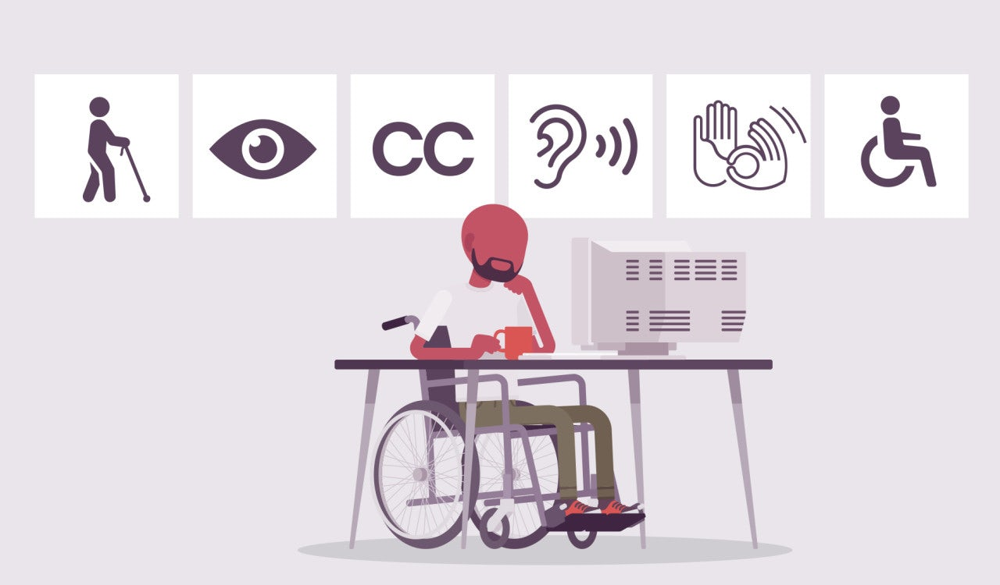

Introduction
The importance of accessibility cannot be underestimated when it comes internet browsing. The majority of people will shy away from webpages which lack the aesthetic qualities to enhance user experience. An all-inclusive webpage caters for the need of an entire audience, even people with varying physical and cognitive impairements. Once an individual is comfortable with a website, it is likely that they will develop an expectation for other websites to be of the same quality they have previously experienced.
Abou-Zahra.
Studies have also shown that a more accessible website will attract a wider range of audiences as it will be inclusive. Such a website alos requires less maintenance while producing better search results(Abou-Zahra.2018). Successful accessibility stems from several components working in tandem. Web content refers any information that is made available by the website, for example images, texts, scripts, code, etc. User agents looks at the software people can use to access web content, for example voice browsers or mobile phone browsers. The final component involves authoring tools which enables people create their own web content. This includes the various code editors, blogs and document conversion tools.
Scholarly and advocative work has continuously brought to attention the need for accessibility for web users with cognitive disabilities, thus, generating an increasing interest in the professional web development. Notwithstanding these transformative efforts, there is still little or no overarching template guiding towards further steps.
Currently, a good percentage of web sites disregard accessibility considerations for visually impaired web content consumers, who often rely on screen readers to accomplish literature needs. These screen readers are applications that translate web content according to the structure into audio format. Unfortunately, screen readers are not able to detect the meaning of the different page objects, and thus the implicit semantic knowledge conveyed in the presentation of the page is lost. One approach described in literature to tackle this problem, is the Dante approach, which allows semantic annotation of web pages to provide screen readers with extra (semantic) knowledge to better facilitate the audio presentation of a web page. Until very recently, such annotations were done manually, and failed for dynamic pages. The annotations are generated as a by-product of the design process, requiring no extra effort from the designer.
Why this conversation is important.

Why are many website pages inaccessible? I do not think this is a question that can be totally answered by an able web user, whose abilities and biases are a deficiency to the understanding of the problem fully. To loosely answer this, I think it depends on the varying range of physical and cognitive disabilities that the user might have. Visually impaired users might need a much larger font, or a sharp contrast between background and foreground colour. Colour-blind users need to have colour-transmitted Language Learning & Technology v5n1 2001 12 information translated into distinguishable shades of gray or delineated in some other way. Blind users may be accessing Web pages using a screen reader, which uses speech synthesis to read the pages and may be confused by improperly coded pages. Physically impaired users might have difficulty in typing key combinations. Other users might need to navigate with a non-traditional input device.
Bibliography
Abou-Zahra, S. et.al. (2018) Design and Applications: Accessibility.